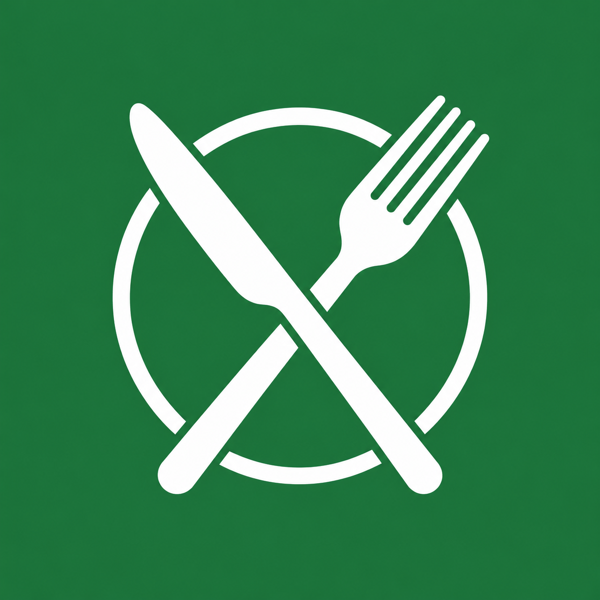

Oggi a tavola / Studio 01
La stessa identità.
Un’icona più nitida.
Il piatto e le posate restano il nostro segno. Due proposte per alleggerire l’effetto lucido e dare più presenza all’icona sulla Home.
Bozzetti · 5 novembre 2026All’apertura
Un ingresso coerente
Anteprima su fondo bianco, con il nome dell’app e il simbolo scelto. Serve a valutare la continuità visiva con la Home.
La schermata è statica: non introduce tempi di attesa nell’app.

Oggi a tavolaPer prenotarsi sempre in tempo!Le forme qui mostrate sono simulazioni CSS, non screenshot di Android o iPhone. I bozzetti sono immagini quadrate opache: gli angoli arrotondati non sono incorporati nei file. Le versioni definitive per Apple, Android e favicon saranno preparate dopo la scelta. L’originale conserva la sua sagoma circolare.